Instalacion de una máquina virtual
-
Nosotros vamos a crear una maquina virtual Ubuntu server 16.04.
- Para eso habra qeu primero descargar la pnatilla que queremos utilizar, eso se hara en local y hay le daqremos a content, dentro de content le daremos a templates y hay apareceran todas la plantillas disponibles. 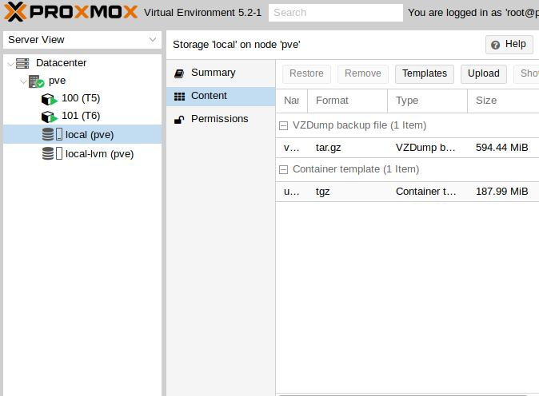 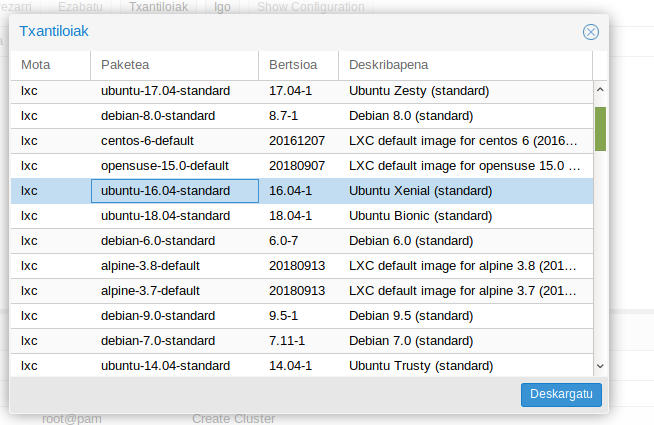
- En la primera pestaña tendremos que elegir el nodo donde lo metemos, la ID, el nombre del Host, y la contraseña 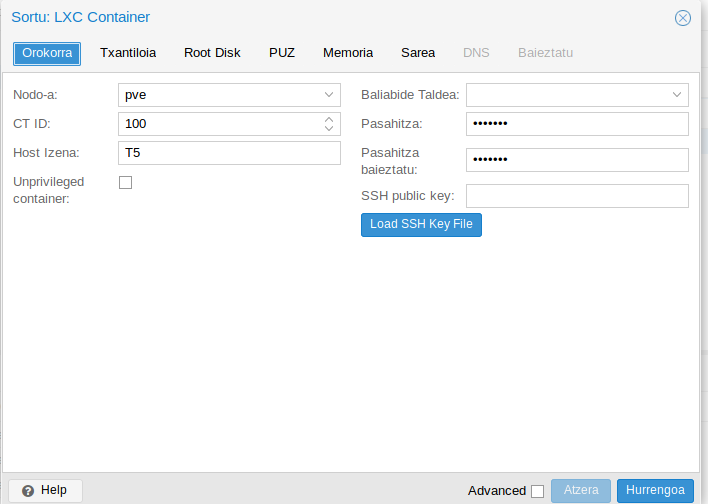
- En la siguiente tendremos que elegir la plantilla que se instalra y donde se guardara. 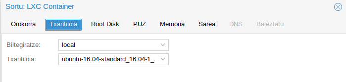
- Luego elegiremos el disco y su tamaño.
- Despues elegiremos los nucleos que tendra. 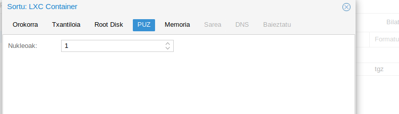
- Despues elegiremos la memoria que tendra. 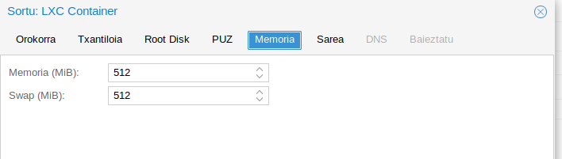
- En la sigiente pondremos la configuracion de la red 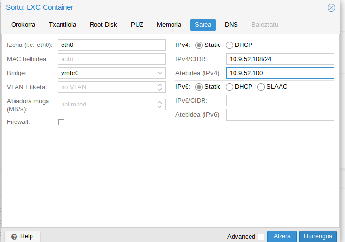
- Esta sera la ultima opantalla de la configuracion y hay que escribir el dns. 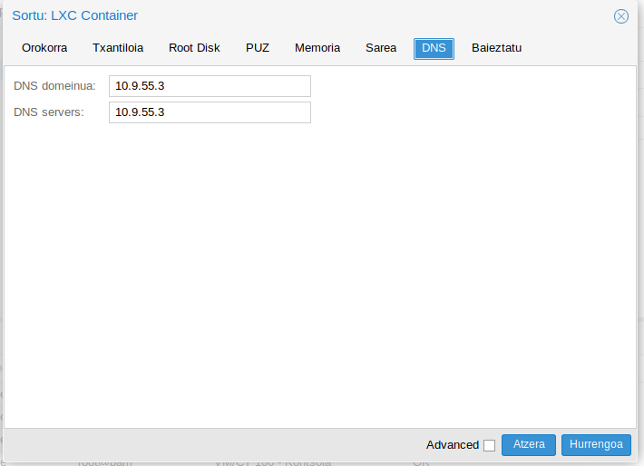
- En esta pantalla podras observar toda la configuracion que le as dado y al darle a terminar empezara la instalación y nos quedara esperar a que termine. 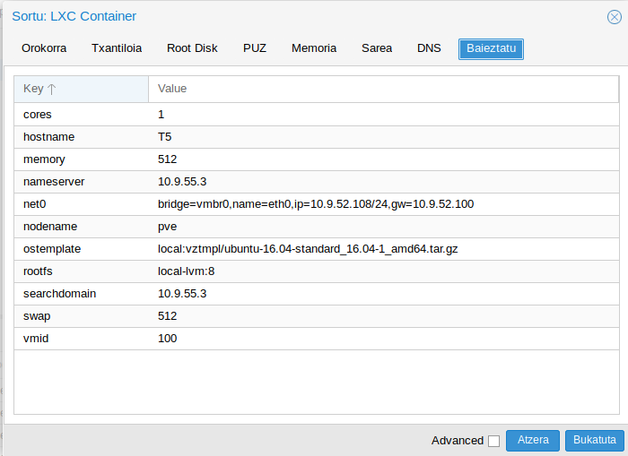 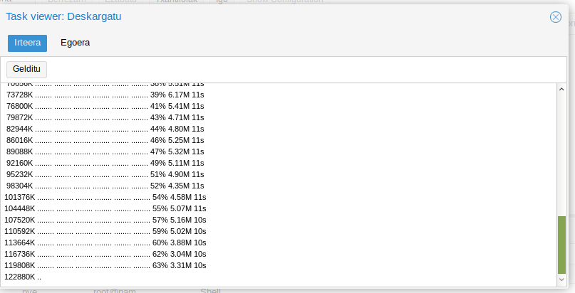 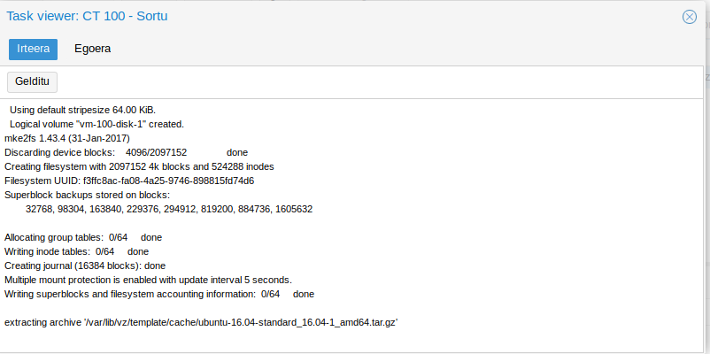
pulsamos en el botón "Crear CT" situado en la esquina superior derecha:
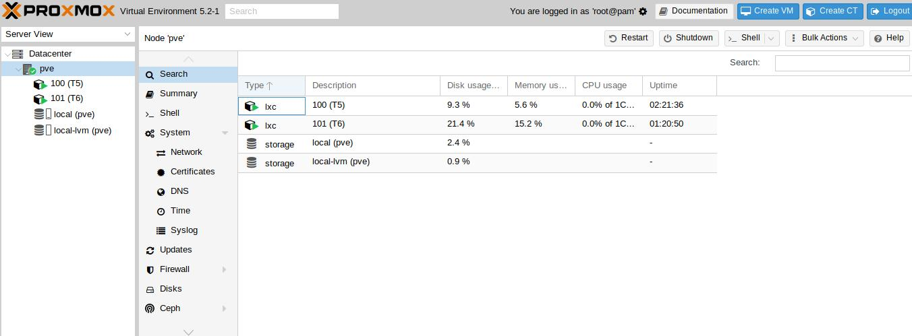